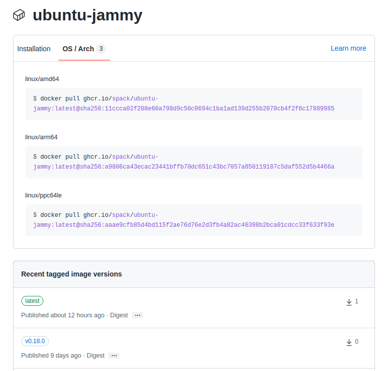

Container Images
Spack Environments (spack.yaml, spack.lock) can easily be turned into container images. This page outlines two ways in which this can be done:
By installing the environment on the host system, and copying the installations into the container image. This approach does not require any tools like Docker or Singularity to be installed.
By generating a Docker or Singularity recipe that can be used to build the container image. In this approach, Spack builds the software inside the container runtime, not on the host system.
The first approach is easiest if you already have an installed environment, the second approach gives more control over the container image.
From existing installations
If you already have a Spack environment installed on your system, you can
share the binaries as an OCI compatible container image. To get started you
just have to configure and OCI registry and run spack buildcache push.
# Create and install an environment in the current directory
spack env create -d .
spack -e . add pkg-a pkg-b
spack -e . install
# Configure the registry
spack -e . mirror add --oci-username-variable REGISTRY_USER \
--oci-password-variable REGISTRY_TOKEN \
container-registry oci://example.com/name/image
# Push the image (do set REGISTRY_USER and REGISTRY_TOKEN)
spack -e . buildcache push --update-index --base-image ubuntu:22.04 --tag my_env container-registry
The resulting container image can then be run as follows:
$ docker run -it example.com/name/image:my_env
The image generated by Spack consists of the specified base image with each package from the environment as a separate layer on top. The image is minimal by construction, it only contains the environment roots and its runtime dependencies.
Note
When using registries like GHCR and Docker Hub, the --oci-password flag is not
the password for your account, but a personal access token you need to generate separately.
The specified --base-image should have a libc that is compatible with the host system.
For example if your host system is Ubuntu 20.04, you can use ubuntu:20.04, ubuntu:22.04
or newer: the libc in the container image must be at least the version of the host system,
assuming ABI compatibility. It is also perfectly fine to use a completely different
Linux distribution as long as the libc is compatible.
For convenience, Spack also turns the OCI registry into a build cache,
so that future spack install of the environment will simply pull the binaries from the
registry instead of doing source builds. The flag --update-index is needed to make Spack
take the build cache into account when concretizing.
Note
When generating container images in CI, the approach above is recommended when CI jobs
already run in a sandboxed environment. You can simply use spack directly
in the CI job and push the resulting image to a registry. Subsequent CI jobs should
run faster because Spack can install from the same registry instead of rebuilding from
sources.
Generating recipes for Docker and Singularity
Apart from copying existing installations into container images, Spack can also generate recipes for container images. This is useful if you want to run Spack itself in a sandboxed environment instead of on the host system.
Since recipes need a little bit more boilerplate than
COPY spack.yaml /environment
RUN spack -e /environment install
Spack provides a command to generate customizable recipes for container images. Customizations include minimizing the size of the image, installing packages in the base image using the system package manager, and setting up a proper entrypoint to run the image.
A Quick Introduction
Consider having a Spack environment like the following:
spack:
specs:
- gromacs+mpi
- mpich
Producing a Dockerfile from it is as simple as changing directories to
where the spack.yaml file is stored and running the following command:
$ spack containerize > Dockerfile
The Dockerfile that gets created uses multi-stage builds and
other techniques to minimize the size of the final image:
# Build stage with Spack pre-installed and ready to be used
FROM spack/ubuntu-bionic:latest as builder
# What we want to install and how we want to install it
# is specified in a manifest file (spack.yaml)
RUN mkdir /opt/spack-environment \
&& (echo "spack:" \
&& echo " specs:" \
&& echo " - gromacs+mpi" \
&& echo " - mpich" \
&& echo " concretizer:" \
&& echo " unify: true" \
&& echo " config:" \
&& echo " install_tree: /opt/software" \
&& echo " view: /opt/view") > /opt/spack-environment/spack.yaml
# Install the software, remove unnecessary deps
RUN cd /opt/spack-environment && spack env activate . && spack install --fail-fast && spack gc -y
# Strip all the binaries
RUN find -L /opt/view/* -type f -exec readlink -f '{}' \; | \
xargs file -i | \
grep 'charset=binary' | \
grep 'x-executable\|x-archive\|x-sharedlib' | \
awk -F: '{print $1}' | xargs strip -s
# Modifications to the environment that are necessary to run
RUN cd /opt/spack-environment && \
spack env activate --sh -d . >> /etc/profile.d/z10_spack_environment.sh
# Bare OS image to run the installed executables
FROM ubuntu:18.04
COPY --from=builder /opt/spack-environment /opt/spack-environment
COPY --from=builder /opt/software /opt/software
COPY --from=builder /opt/view /opt/view
COPY --from=builder /etc/profile.d/z10_spack_environment.sh /etc/profile.d/z10_spack_environment.sh
ENTRYPOINT ["/bin/bash", "--rcfile", "/etc/profile", "-l"]
The image itself can then be built and run in the usual way, with any of the
tools suitable for the task. For instance, if we decided to use docker:
$ spack containerize > Dockerfile
$ docker build -t myimage .
[ ... ]
$ docker run -it myimage
The various components involved in the generation of the recipe and their configuration are discussed in details in the sections below.
Spack Images on Docker Hub
Docker images with Spack preinstalled and ready to be used are
built when a release is tagged, or nightly on develop. The images
are then pushed both to Docker Hub
and to GitHub Container Registry.
The OS that are currently supported are summarized in the table below:
Operating System |
Base Image |
Spack Image |
|---|---|---|
Ubuntu 20.04 |
|
|
Ubuntu 22.04 |
|
|
Ubuntu 24.04 |
|
|
CentOS Stream9 |
|
|
openSUSE Leap |
|
|
Amazon Linux 2 |
|
|
AlmaLinux 8 |
|
|
AlmaLinux 9 |
|
|
Rocky Linux 8 |
|
|
Rocky Linux 9 |
|
|
Fedora Linux 39 |
|
|
Fedora Linux 40 |
|
|
All the images are tagged with the corresponding release of Spack:
with the exception of the latest tag that points to the HEAD
of the develop branch. These images are available for anyone
to use and take care of all the repetitive tasks that are necessary
to setup Spack within a container. The container recipes generated
by Spack use them as default base images for their build stage,
even though handles to use custom base images provided by users are
available to accommodate complex use cases.
Configuring the Container Recipe
Any Spack Environment can be used for the automatic generation of container
recipes. Sensible defaults are provided for things like the base image or the
version of Spack used in the image.
If a finer tuning is needed it can be obtained by adding the relevant metadata
under the container attribute of environments:
spack:
specs:
- gromacs+mpi
- mpich
container:
# Select the format of the recipe e.g. docker,
# singularity or anything else that is currently supported
format: docker
# Sets the base images for the stages where Spack builds the
# software or where the software gets installed after being built..
images:
os: "centos:7"
spack: develop
# Whether or not to strip binaries
strip: true
# Additional system packages that are needed at runtime
os_packages:
final:
- libgomp
# Labels for the image
labels:
app: "gromacs"
mpi: "mpich"
A detailed description of the options available can be found in the Configuration Reference section.
Setting Base Images
The images subsection is used to select both the image where
Spack builds the software and the image where the built software
is installed. This attribute can be set in different ways and
which one to use depends on the use case at hand.
Use Official Spack Images From Dockerhub
To generate a recipe that uses an official Docker image from the Spack organization to build the software and the corresponding official OS image to install the built software, all the user has to do is specify:
An operating system under
images:osA Spack version under
images:spack
Any combination of these two values that can be mapped to one of the images
discussed in Spack Images on Docker Hub is allowed. For instance, the
following spack.yaml:
spack:
specs:
- gromacs+mpi
- mpich
container:
images:
os: centos:7
spack: 0.15.4
uses spack/centos7:0.15.4 and centos:7 for the stages where the
software is respectively built and installed:
# Build stage with Spack pre-installed and ready to be used
FROM spack/centos7:0.15.4 as builder
# What we want to install and how we want to install it
# is specified in a manifest file (spack.yaml)
RUN mkdir /opt/spack-environment \
&& (echo "spack:" \
&& echo " specs:" \
&& echo " - gromacs+mpi" \
&& echo " - mpich" \
&& echo " concretizer:" \
&& echo " unify: true" \
&& echo " config:" \
&& echo " install_tree: /opt/software" \
&& echo " view: /opt/view") > /opt/spack-environment/spack.yaml
[ ... ]
# Bare OS image to run the installed executables
FROM centos:7
COPY --from=builder /opt/spack-environment /opt/spack-environment
COPY --from=builder /opt/software /opt/software
COPY --from=builder /opt/view /opt/view
COPY --from=builder /etc/profile.d/z10_spack_environment.sh /etc/profile.d/z10_spack_environment.sh
ENTRYPOINT ["/bin/bash", "--rcfile", "/etc/profile", "-l"]
This is the simplest available method of selecting base images, and we advise to use it whenever possible. There are cases though where using Spack official images is not enough to fit production needs. In these situations users can extend the recipe to start with the bootstrapping of Spack at a certain pinned version or manually select which base image to start from in the recipe, as we’ll see next.
Use a Bootstrap Stage for Spack
In some cases users may want to pin the commit sha that is used for Spack, to ensure later
reproducibility, or start from a fork of the official Spack repository to try a bugfix or
a feature in the early stage of development. This is possible by being just a little more
verbose when specifying information about Spack in the spack.yaml file:
images:
os: amazonlinux:2
spack:
# URL of the Spack repository to be used in the container image
url: <to-use-a-fork>
# Either a commit sha, a branch name or a tag
ref: <sha/tag/branch>
# If true turn a branch name or a tag into the corresponding commit
# sha at the time of recipe generation
resolve_sha: <true/false>
url specifies the URL from which to clone Spack and defaults to https://github.com/spack/spack.
The ref attribute can be either a commit sha, a branch name or a tag. The default value in
this case is to use the develop branch, but it may change in the future to point to the latest stable
release. Finally resolve_sha transform branch names or tags into the corresponding commit
shas at the time of recipe generation, to allow for a greater reproducibility of the results
at a later time.
The list of operating systems that can be used to bootstrap Spack can be obtained with:
$ spack containerize --list-os
==> The following operating systems can be used to bootstrap Spack:
alpine:3 amazonlinux:2 fedora:40 fedora:39 rockylinux:9 rockylinux:8 almalinux:9 almalinux:8 centos:stream9 opensuse/leap:15 nvidia/cuda:11.2.1 ubuntu:24.04 ubuntu:22.04 ubuntu:20.04
Note
The resolve_sha option uses git rev-parse under the hood and thus it requires
to checkout the corresponding Spack repository in a temporary folder before generating
the recipe. Recipe generation may take longer when this option is set to true because
of this additional step.
Use Custom Images Provided by Users
Consider, as an example, building a production grade image for a CUDA application. The best strategy would probably be to build on top of images provided by the vendor and regard CUDA as an external package.
Spack doesn’t currently provide an official image with CUDA configured this way, but users can build it on their own and then configure the environment to explicitly pull it. This requires users to:
Specify the image used to build the software under
images:buildSpecify the image used to install the built software under
images:final
A spack.yaml like the following:
spack:
specs:
- gromacs@2019.4+cuda build_type=Release
- mpich
- fftw precision=float
packages:
cuda:
buildable: False
externals:
- spec: cuda%gcc
prefix: /usr/local/cuda
container:
images:
build: custom/cuda-10.1-ubuntu18.04:latest
final: nvidia/cuda:10.1-base-ubuntu18.04
produces, for instance, the following Dockerfile:
# Build stage with Spack pre-installed and ready to be used
FROM custom/cuda-10.1-ubuntu18.04:latest as builder
# What we want to install and how we want to install it
# is specified in a manifest file (spack.yaml)
RUN mkdir /opt/spack-environment \
&& (echo "spack:" \
&& echo " specs:" \
&& echo " - gromacs@2019.4+cuda build_type=Release" \
&& echo " - mpich" \
&& echo " - fftw precision=float" \
&& echo " packages:" \
&& echo " cuda:" \
&& echo " buildable: false" \
&& echo " externals:" \
&& echo " - spec: cuda%gcc" \
&& echo " prefix: /usr/local/cuda" \
&& echo " concretizer:" \
&& echo " unify: true" \
&& echo " config:" \
&& echo " install_tree: /opt/software" \
&& echo " view: /opt/view") > /opt/spack-environment/spack.yaml
# Install the software, remove unnecessary deps
RUN cd /opt/spack-environment && spack env activate . && spack install --fail-fast && spack gc -y
# Strip all the binaries
RUN find -L /opt/view/* -type f -exec readlink -f '{}' \; | \
xargs file -i | \
grep 'charset=binary' | \
grep 'x-executable\|x-archive\|x-sharedlib' | \
awk -F: '{print $1}' | xargs strip -s
# Modifications to the environment that are necessary to run
RUN cd /opt/spack-environment && \
spack env activate --sh -d . >> /etc/profile.d/z10_spack_environment.sh
# Bare OS image to run the installed executables
FROM nvidia/cuda:10.1-base-ubuntu18.04
COPY --from=builder /opt/spack-environment /opt/spack-environment
COPY --from=builder /opt/software /opt/software
COPY --from=builder /opt/view /opt/view
COPY --from=builder /etc/profile.d/z10_spack_environment.sh /etc/profile.d/z10_spack_environment.sh
ENTRYPOINT ["/bin/bash", "--rcfile", "/etc/profile", "-l"]
where the base images for both stages are completely custom.
This second mode of selection for base images is more flexible than just choosing an operating system and a Spack version, but is also more demanding. Users may need to generate by themselves their base images and it’s also their responsibility to ensure that:
Spack is available in the
buildstage and set up correctly to install the required softwareThe artifacts produced in the
buildstage can be executed in thefinalstage
Therefore we don’t recommend its use in cases that can be otherwise covered by the simplified mode shown first.
Singularity Definition Files
In addition to producing recipes in Dockerfile format Spack can produce
Singularity Definition Files by just changing the value of the format
attribute:
$ cat spack.yaml
spack:
specs:
- hdf5~mpi
container:
format: singularity
$ spack containerize > hdf5.def
$ sudo singularity build hdf5.sif hdf5.def
The minimum version of Singularity required to build a SIF (Singularity Image Format)
image from the recipes generated by Spack is 3.5.3.
Extending the Jinja2 Templates
The Dockerfile and the Singularity definition file that Spack can generate are based on a few Jinja2 templates that are rendered according to the environment being containerized. Even though Spack allows a great deal of customization by just setting appropriate values for the configuration options, sometimes that is not enough.
In those cases, a user can directly extend the template that Spack uses to render the image to e.g. set additional environment variables or perform specific operations either before or after a given stage of the build. Let’s consider as an example the following structure:
$ tree /opt/environment
/opt/environment
├── data
│ └── data.csv
├── spack.yaml
├── data
└── templates
└── container
└── CustomDockerfile
containing both the custom template extension and the environment manifest file. To use a custom
template, the environment must register the directory containing it, and declare its use under the
container configuration:
spack:
specs:
- hdf5~mpi
concretizer:
unify: true
config:
template_dirs:
- /opt/environment/templates
container:
format: docker
depfile: true
template: container/CustomDockerfile
The template extension can override two blocks, named build_stage and final_stage, similarly to
the example below:
{% extends "container/Dockerfile" %}
{% block build_stage %}
RUN echo "Start building"
{{ super() }}
{% endblock %}
{% block final_stage %}
{{ super() }}
COPY data /share/myapp/data
{% endblock %}
The Dockerfile is generated by running:
$ spack -e /opt/environment containerize
Note that the environment must be active for spack to read the template. The recipe that gets generated contains the two extra instruction that we added in our template extension:
# Build stage with Spack pre-installed and ready to be used
FROM spack/ubuntu-jammy:latest as builder
RUN echo "Start building"
# What we want to install and how we want to install it
# is specified in a manifest file (spack.yaml)
RUN mkdir /opt/spack-environment \
&& (echo "spack:" \
&& echo " specs:" \
&& echo " - hdf5~mpi" \
&& echo " concretizer:" \
&& echo " unify: true" \
&& echo " config:" \
&& echo " template_dirs:" \
&& echo " - /tmp/environment/templates" \
&& echo " install_tree: /opt/software" \
&& echo " view: /opt/view") > /opt/spack-environment/spack.yaml
# Install the software, remove unnecessary deps
RUN cd /opt/spack-environment && spack env activate . && spack concretize && spack env depfile -o Makefile && make -j $(nproc) && spack gc -y
# Strip all the binaries
RUN find -L /opt/view/* -type f -exec readlink -f '{}' \; | \
xargs file -i | \
grep 'charset=binary' | \
grep 'x-executable\|x-archive\|x-sharedlib' | \
awk -F: '{print $1}' | xargs strip -s
# Modifications to the environment that are necessary to run
RUN cd /opt/spack-environment && \
spack env activate --sh -d . >> /etc/profile.d/z10_spack_environment.sh
# Bare OS image to run the installed executables
FROM ubuntu:22.04
COPY --from=builder /opt/spack-environment /opt/spack-environment
COPY --from=builder /opt/software /opt/software
COPY --from=builder /opt/._view /opt/._view
COPY --from=builder /opt/view /opt/view
COPY --from=builder /etc/profile.d/z10_spack_environment.sh /etc/profile.d/z10_spack_environment.sh
COPY data /share/myapp/data
ENTRYPOINT ["/bin/bash", "--rcfile", "/etc/profile", "-l", "-c", "$*", "--" ]
CMD [ "/bin/bash" ]
Configuration Reference
The tables below describe all the configuration options that are currently supported to customize the generation of container recipes:
Option Name |
Description |
Allowed Values |
Required |
|---|---|---|---|
|
The format of the recipe |
|
Yes |
|
Whether to use a depfile for installation, or not |
True or False (default) |
No |
|
Operating system used as a base for the image |
Yes, if using constrained selection of base images |
|
|
Version of Spack use in the |
Valid tags for |
Yes, if using constrained selection of base images |
|
Repository from which Spack is cloned |
Any fork of Spack |
No |
|
Reference for the checkout of Spack |
Either a commit sha, a branch name or a tag |
No |
|
Resolve branches and tags in |
True or False (default: False) |
No |
|
Image to be used in the |
Any valid container image |
Yes, if using custom selection of base images |
|
Image to be used in the |
Any valid container image |
Yes, if using custom selection of base images |
|
Whether to strip binaries |
|
No |
|
Tool used to manage system packages |
|
Only with custom base images |
|
Whether or not to update the list of available packages |
True or False (default: True) |
No |
|
System packages needed at build-time |
Valid packages for the current OS |
No |
|
System packages needed at run-time |
Valid packages for the current OS |
No |
|
Labels to tag the image |
Pairs of key-value strings |
No |
Option Name |
Description |
Allowed Values |
Required |
|---|---|---|---|
|
Content of |
Any valid script |
No |
|
Content of |
Any valid script |
No |
|
Content of |
Any valid script |
No |
|
Description of the image |
Description string |
No |
Best Practices
MPI
Due to the dependency on Fortran for OpenMPI, which is the spack default
implementation, consider adding gfortran to the apt-get install list.
Recent versions of OpenMPI will require you to pass --allow-run-as-root
to your mpirun calls if started as root user inside Docker.
For execution on HPC clusters, it can be helpful to import the docker
image into Singularity in order to start a program with an external
MPI. Otherwise, also add openssh-server to the apt-get install list.
CUDA
Starting from CUDA 9.0, Nvidia provides minimal CUDA images based on Ubuntu. Please see their instructions. Avoid double-installing CUDA by adding, e.g.
packages:
cuda:
externals:
- spec: "cuda@9.0.176%gcc@5.4.0 arch=linux-ubuntu16-x86_64"
prefix: /usr/local/cuda
buildable: False
to your spack.yaml.
Users will either need nvidia-docker or e.g. Singularity to execute
device kernels.
Docker on Windows and OSX
On Mac OS and Windows, docker runs on a hypervisor that is not allocated much memory by default, and some spack packages may fail to build due to lack of memory. To work around this issue, consider configuring your docker installation to use more of your host memory. In some cases, you can also ease the memory pressure on parallel builds by limiting the parallelism in your config.yaml.
config:
build_jobs: 2